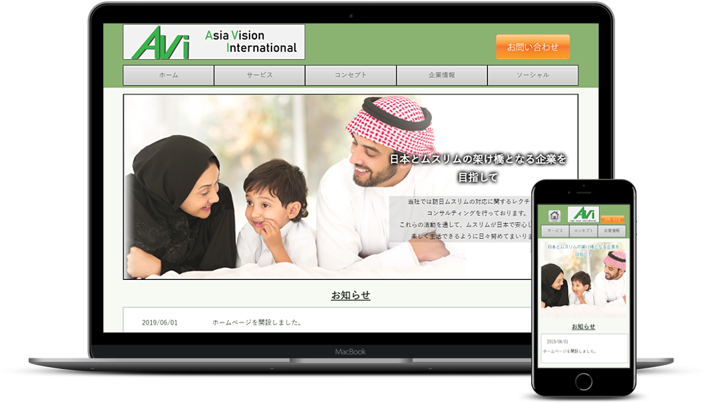

ABOUT
福吉 一樹
趣味・特技
- 音楽を聴くこと
- ドラムの演奏
- お笑い番組の鑑賞
プロフィール
男四兄弟の末っ子として生まれました。
兄達の影響で小さいころからテレビ・音楽・ゲーム・インターネットなどのサブカルチャーにたくさん触れる機会があり、あらゆることに幅広く興味を持つ性格が形成されました。
前職では、製紙の専門商社で総務を3年半経験しました。
より専門性の高い仕事がしたいと思うとともに、クライアント(企業・商品・サービス)の課題を、Web技術を駆使したものづくりで解決する、Webサイト・Webサービスに魅力を感じ、Web業界を志望しました。
クライアントの考えを具現化して課題解決ができるWebデザイナーを目指しております。
SKILL
-

HTML5/CSS5
★★★★☆
文法を理解したうえで、マークアップができます。
CSSについても基本的なタグを理解し、アニメーションも実装できます。
-

JavaScript
★★★☆☆
jQueryの専門書を読み、学びました。
簡単なスライドショーやナビゲーションメニューなどの実装ができます。
-
Photoshop,
Illustrator★★★★☆
Photoshopでは画像のトリミングや効果を使い、編集・加工ができます。
Illustratorではワイヤーフレーム、バナーデザイン等の素材作成ができます。
-
DreamWeaver,
AdobeXD★★★★☆
DreamWeaverでは効率よくタグを書き、Webサイトの作成ができます。
XDを使用しワイヤーフレーム、プロトタイプの作成ができます。
-

Word,Excel,
PowerPoint★★★★☆
Word,ExcelはMOSを取得済。
ExcelではVLOOKUP等の関数を用いた文書作成ができます。
Powerpointは基本的な操作は勿論、アニメーションなどの設定もできます。
-
その他のスキル
- Webデザイン技能検定3級
- ITパスポート
- Microsoft Office Specialist 2016(Word,Excel)
- 秘書技能検定2級
WORKS
-
Unlimited Dream Navigator OFFICIAL WEBSITE
(アーティスト公式サイト ※現在制作中※)
兄の所属しているバンドの公式サイトを制作中です。
これまでのスキルのアウトプットと、既存サイトを自分ならどうデザインするかを考えて作成しています。
完成したら提案しようと考えております。 -
アジアヴィジョン・インターナショナル
(訪日ムスリムのコンサルタント会社の企業サイト)知人の企業サイトを課題として作成しました。
自社作成のハラールレストラン紹介サイト"Oishi Oishi Japan"のサービス説明、サイトへの誘導をし、登録会社とユーザを増やす目的で作成しました。
-
ASOBITEクリエイター支援サービス
(Web制作会社のクリエイター支援サービスの紹介サイト)